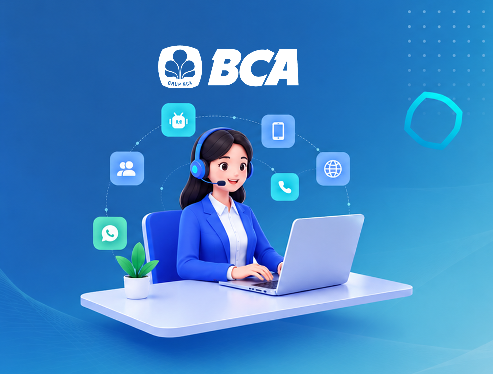
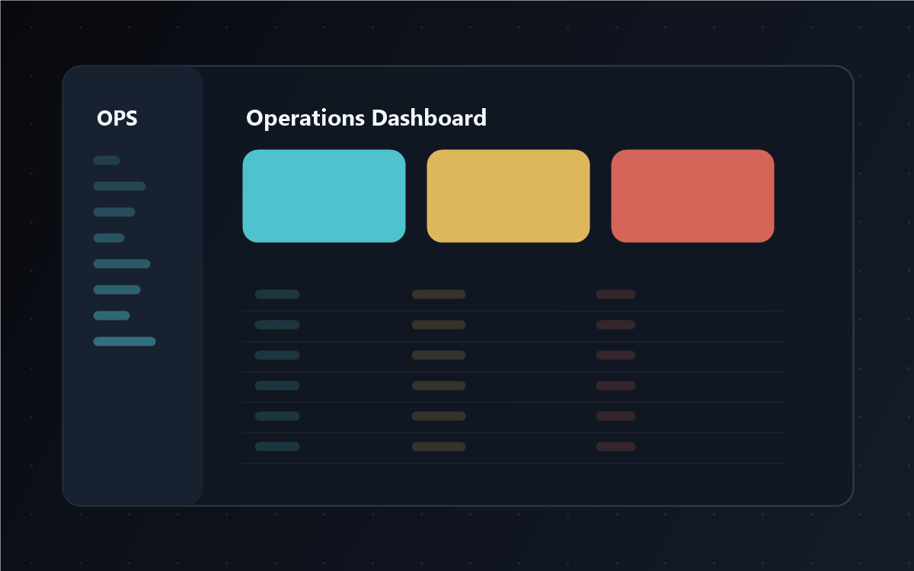
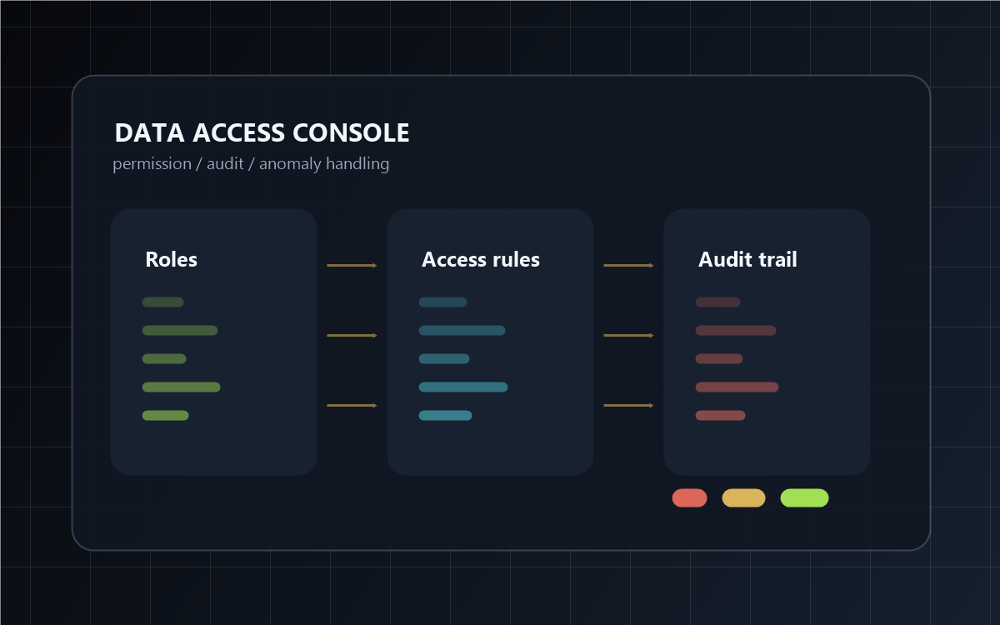

00 / FEATURED SLOT
RESERVED
重点项目展示位
这里先留空，后续可以放一个完整案例的项目背景、设计目标、核心流程、关键页面和结果数据。
Available for G-side and data tooling UX roles
> UX DESIGNER / COMPLEX SYSTEMS
> 数据后台体验 B 端业务系统 复杂流程设计
三年 UX 设计经验，主要关注数据后台、B 端管理系统和复杂业务流程。 我擅长把多角色、多状态、多规则的系统界面，转化为清晰、稳定、可持续迭代的产品体验。
CORE UX EVALUATION STANDARDS
Complex-system UX is a control layer: it lets people operate rules, data, and risk without losing context.
01 / CASE LOG
项目模块以招聘方快速扫描为目标：先看场景、复杂度、你的设计动作，再展开过程与结果。
00 / FEATURED SLOT
这里先留空，后续可以放一个完整案例的项目背景、设计目标、核心流程、关键页面和结果数据。

面向银行客服坐席的高密度工作台，覆盖来电、在线会话、CRM、辅助决策与管理配置流程。

围绕数据看板、筛选查询、批量操作、状态反馈和角色协作，提升后台任务处理效率。

把权限申请、审批授权、风险提示和审计追踪整理成闭环管理体验。
02 / DATA CONSOLE
这一块适合替换成你的数据后台项目截图、Figma 原型、录屏链接或脱敏后的核心任务流程。
任务入口：数据概览 / 待处理列表 / 异常提醒
核心操作：筛选定位 → 查看详情 → 批量处理 → 结果确认
角色边界：运营人员 / 管理员 / 审核人员
体验重点：状态可见、口径清晰、反馈及时、风险可控03 / METHOD
复杂系统 UX 的重点不是“画得更漂亮”，而是让角色、规则、数据、风险都能被用户稳定理解。
拆解角色、权限、状态、流程节点和数据流向。
建立高频任务路径，确认入口、反馈、退出和异常分支。
通过分层信息、可解释状态和错误恢复降低认知负担。
输出原型、交互说明、验收规则与研发对齐文档。
04 / DECISION MAP
每个真实案例都可以按这个骨架填充，读者会更容易看到你的设计判断。
业务背景、用户角色、系统限制、为什么现在必须解决。
访谈、走查、数据日志、工单反馈如何指向关键问题。
信息架构、流程改造、权限表达、错误反馈的具体取舍。
效率、错误率、学习成本、协作成本或上线反馈。
05 / UX STACK
这里像技术栈一样展示你的 UX 能力：不是泛泛地说“会设计”，而是让招聘方看到你能处理哪类复杂问题。